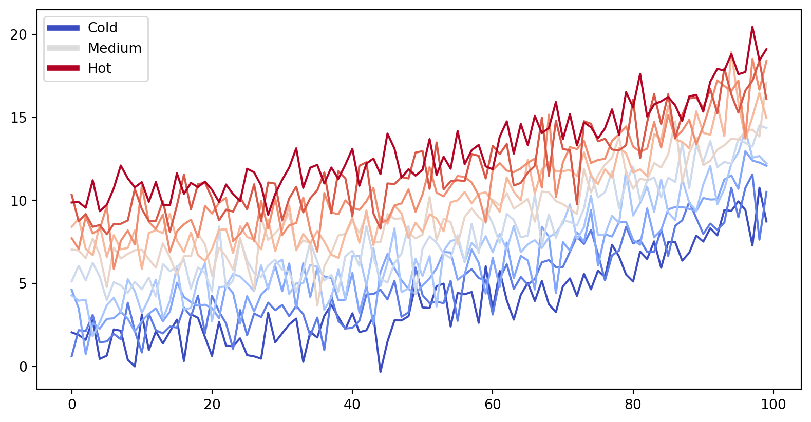

from matplotlib import rcParams, cycler
import matplotlib.pyplot as plt
import numpy as np
plt.ion()<matplotlib.pyplot._IonContext at 0x105a4c8e0>You can also create content with Jupyter Notebooks. This means that you can include code blocks and their outputs in your book.
As it is markdown, you can embed images, HTML, etc into your posts!

You can also \(add_{math}\) and
\[ math^{blocks} \]
or
\[ \begin{aligned} \mbox{mean} la_{tex} \\ \\ math blocks \end{aligned} \]
But make sure you $Escape $your $dollar signs $you want to keep!
MyST markdown works in Jupyter Notebooks as well. For more information about MyST markdown, check out the MyST guide in Jupyter Book, or see the MyST markdown documentation.
Jupyter Book will also embed your code blocks and output in your book. For example, here’s some sample Matplotlib code:
from matplotlib import rcParams, cycler
import matplotlib.pyplot as plt
import numpy as np
plt.ion()<matplotlib.pyplot._IonContext at 0x105a4c8e0># Fixing random state for reproducibility
np.random.seed(19680801)
N = 10
data = [np.logspace(0, 1, 100) + np.random.randn(100) + ii for ii in range(N)]
data = np.array(data).T
cmap = plt.cm.coolwarm
rcParams['axes.prop_cycle'] = cycler(color=cmap(np.linspace(0, 1, N)))
from matplotlib.lines import Line2D
custom_lines = [Line2D([0], [0], color=cmap(0.), lw=4),
Line2D([0], [0], color=cmap(.5), lw=4),
Line2D([0], [0], color=cmap(1.), lw=4)]
fig, ax = plt.subplots(figsize=(10, 5))
lines = ax.plot(data)
ax.legend(custom_lines, ['Cold', 'Medium', 'Hot']);
There is a lot more that you can do with outputs (such as including interactive outputs) with your book. For more information about this, see the Jupyter Book documentation